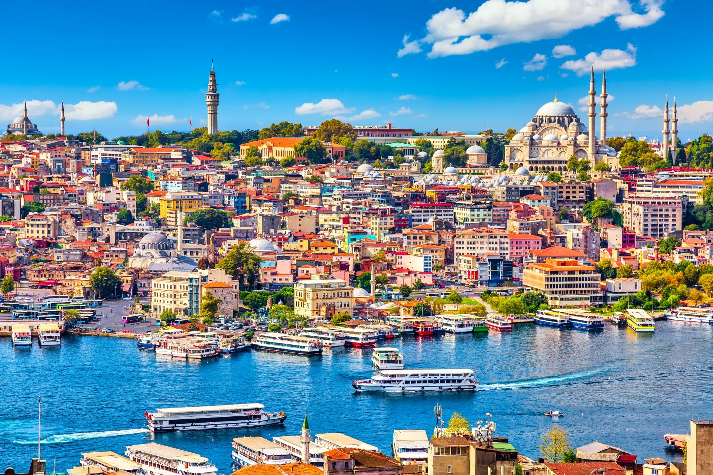

Istanbul
Istanbul , the captivating bridge between Europe and Asia, is a city steeped in history and brimming with cultural delights. As the former capital of empires, its streets are adorned with stunning architectural marvels such as the iconic Hagia Sophia, the Blue Mosque, and the Topkapi Palace. The bustling Grand Bazaar entices visitors with its vibrant colors and aromatic spices, while the Bosphorus Strait offers breathtaking views and romantic boat cruises.
Istanbul's unique blend of old-world charm and modern energy invites travelers to immerse themselves in the timeless allure of this enchanting metropolis. The city's cultural heritage is evident in its numerous museums, art galleries, and historic sites. Wander through the historic neighborhoods of Sultanahmet and Beyoglu to experience the rich tapestry of Turkish traditions and hospitality.
Marvel at the grandeur of Hagia Sophia, a masterpiece of Byzantine architecture that once served as a church and later transformed into a mosque and museum. The Blue Mosque, with its intricate blue tiles and six minarets, stands as a symbol of Ottoman splendor. Explore the opulent Topkapi Palace, which served as the residence of Ottoman sultans for centuries, and gaze upon the treasures housed in the Imperial Treasury.